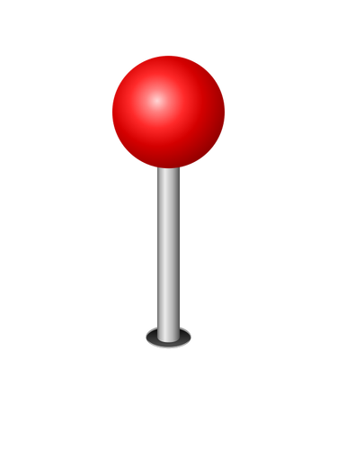
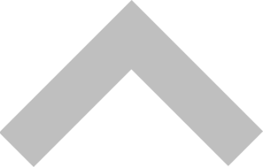

{% load static %} 

{% block css %}
  <link rel="stylesheet" href="{% static 'styles/map_marker.css' %}" />
  <link rel="stylesheet" href="{% static 'styles/partials/navbar.css' %}" />
  <link rel="stylesheet" href="{% static 'styles/partials/footer.css' %}" />
  <link rel="stylesheet" href="{% static 'styles/test_overlay.css'%}" />
  <link rel="preconnect" href="https://fonts.gstatic.com" />
  <link href="https://fonts.googleapis.com/css2?family=Do+Hyeon&display=swap" rel="stylesheet"/>
{% endblock %} 

{% block navbar %} 
	{% include "partials/navbar.html" %}
{% endblock %} 

<body>
	<div id="map" style="width:100%;height:84%;"></div>


  <script src="https://code.jquery.com/jquery-3.2.1.min.js"></script>
  <script type="text/javascript" src="//dapi.kakao.com/v2/maps/sdk.js?appkey=8473586f2a4919e8cf90580a8334ebbc&libraries=services"></script>
  <script>
    var mapContainer = document.getElementById('map'), // 지도를 표시할 div 
      mapOption = { 
          center: new kakao.maps.LatLng(37.502, 127.026581), // 지도의 중심좌표
          level: 12 // 지도의 확대 레벨
      };

    var map = new kakao.maps.Map(mapContainer, mapOption); // 지도를 생성합니다

    // 커스텀 오버레이에 표시할 내용입니다     
    // HTML 문자열 또는 Dom Element 입니다 
    var content = '<div class="overlaybox">' +
        `    ` +
        '  </div>';

    // 커스텀 오버레이가 표시될 위치입니다
    var position = [];

    $.ajax({
        url: "{% url 'posts:getApi' %}",
        dataType: "json",
        success: function (data) {
            console.log(data);
            var apiTest = "";
            for (var i = 0; i < data.length; i++) {
                var position = new kakao.maps.LatLng(data[i].fields.lat, data[i].fields.lng);
                var customOverlay = new kakao.maps.CustomOverlay({
                  position: position,
                  content: content,
                });
                customOverlay.setMap(map);
            }
            console.log(position);
        },
        error: function (request, status, error) {
            console.log('실패');
        },
        async: false
    });

    //마커포스팅이미지 테스트 코드

    var imageSrc = '../../static/images/test_marker.png', // 마커이미지의 주소입니다    
        imageSize = new kakao.maps.Size(50, 50), // 마커이미지의 크기입니다
        imageOption = {offset: new kakao.maps.Point(27, 69)}; // 마커이미지의 옵션입니다. 마커의 좌표와 일치시킬 이미지 안에서의 좌표를 설정합니다.

    // 마커의 이미지정보를 가지고 있는 마커이미지를 생성합니다
    var markerImage = new kakao.maps.MarkerImage(imageSrc, imageSize, imageOption),
        markerPosition = new kakao.maps.LatLng(37.44875, 127.286619); // 마커가 표시될 위치입니다

    // 마커를 생성합니다
    var marker = new kakao.maps.Marker({
      position: markerPosition,
      image: markerImage // 마커이미지 설정 
    });

    // 마커가 지도 위에 표시되도록 설정합니다
    marker.setMap(map);  


    //커스텀 오버레이로 포스팅이미지 나열해보기
    //마커용 오버레이에 들어갈 내용
    var test_content = '<div class="test_overlaybox">' +
        '   <div class="box_header">' + //오버레이 윗부분
        '        <div class="title">' +
        '           <span class="marker">' +
        '               ' +
        '           </span>'+
        '           <span>' +
        '               <div class="close" onclick="closeOverlay()" title="닫기">'+
        '                   ' + 
        '           </span>' +
        '        </div>' + 
        '   </div>' +   
        '   <div class="imageBox">' + //오버레이 본문부분
        '       <div class = "imageBox_Title">' + //사진 윗부분
        '           PHOTO' +
        '       </div>' +
        '       <div class = "Images">' + //갤러리가 될 부분
        '           <ul class="Image">'+
        '               <li>' + '' + '</li>' +
        '               <li>' + '' + '</li>' +
        '               <li>' + '' + '</li>' +
        '               <li>' + '' + '</li>' +
        '               <li>' + '' + '</li>' +
        '               <li>' + '' + '</li>' +
        '           </ul>' +
        '       </div>' +
        '   </div>' +
        '   <div class = "buttons">' + //스크롤 버튼이 될 부분
        '           <span>' + //아래 스크롤 버튼
        '               <div class="btn" onclick="" title="아래스크롤">' +
        '                   ' + 
        '           </span>' +
        '           <span>' + //위 스크롤 버튼
        '               <div class="btn" onclick="" title="위스크롤">' +
        '                   ' + 
        '           </span>' +
        '   </div>' +
        '</div>';
        

    //마커용 오버레이 나타내기
    var test_overlay = new kakao.maps.CustomOverlay({
        content: test_content,
        position: marker.getPosition()
    });

    //마커 클릭 시 오버레이 나타나도록하기
    kakao.maps.event.addListener(marker, 'click', function(){
        test_overlay.setMap(map);
    });

    //닫기(X)버튼을 눌렀을 때 오버레이 사라지도록
    function closeOverlay() {
        test_overlay.setMap(null);     
    } 
  </script>
</body>

{% block footer %} 
	{% include "partials/footer.html" %}
{% endblock %} 
